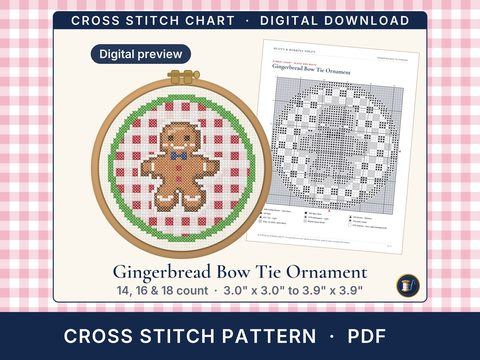

Digital previewGingerbread Bow Tie Ornament
Gingerbread Bow Tie Ornament Cross Stitch Pattern PDF, Preppy Christmas
Buy on EtsyGingerbread Bow Tie Ornament cross stitch pattern (PDF): A gingerbread cookie in a navy bow tie on red gingham.
Instant download. A digital counted cross stitch pattern: a PDF and a ZIP with 1 PNG of the pattern at 1 pixel per stitch and a DMC color list. It is not a kit: no fabric, floss or needle is included, and nothing is shipped.
How to download
Open etsy.com in a web browser (the Etsy app can't download files) > You > Purchases > Download files.
You get
- 7-page PDF: a symbol chart and a color chart for the pattern, a DMC thread list with skein estimates per count, a Start here page, and how to stitch it: finding the center, strands, and full crosses all the same way
- ZIP: 1 PNG of the pattern at 1 pixel per stitch and a DMC color list; the color list gives the DMC numbers, names, stitch counts and skeins per count
- Sizes for 14, 16 and 18-count Aida, and 28-count evenweave over two, in one download
Size (the stitched area; the fabric to cut adds 3" on every side)
- 54 x 54 stitches:
14-count Aida or 28-count evenweave over two: 3.9" x 3.9" (cut the fabric 9.9" x 9.9")
16-count Aida: 3.4" x 3.4" (cut the fabric 9.4" x 9.4")
18-count Aida: 3.0" x 3.0" (cut the fabric 9.0" x 9.0")
You'll need
- 14, 16 or 18-count Aida, or 28-count evenweave, in any color: the background is stitched too
- 9 DMC six-strand floss colors (numbers, names and skeins per count are in the PDF); 2 strands for full crosses
- A tapestry needle, and an embroidery hoop or frame
Skill: Confident beginner (9 colors and a few small details; full crosses only)
Save with the set
License
Personal use: stitch it for yourself and as gifts. Please don't share or resell the files, or use them for mass production.
Colors on screen are approximate; check them against a DMC color card. Because this is a digital download it can't be returned, but if anything is wrong with your file, message me and I'll make it right.
Designed by Buoys & Bobbins NDLPT.